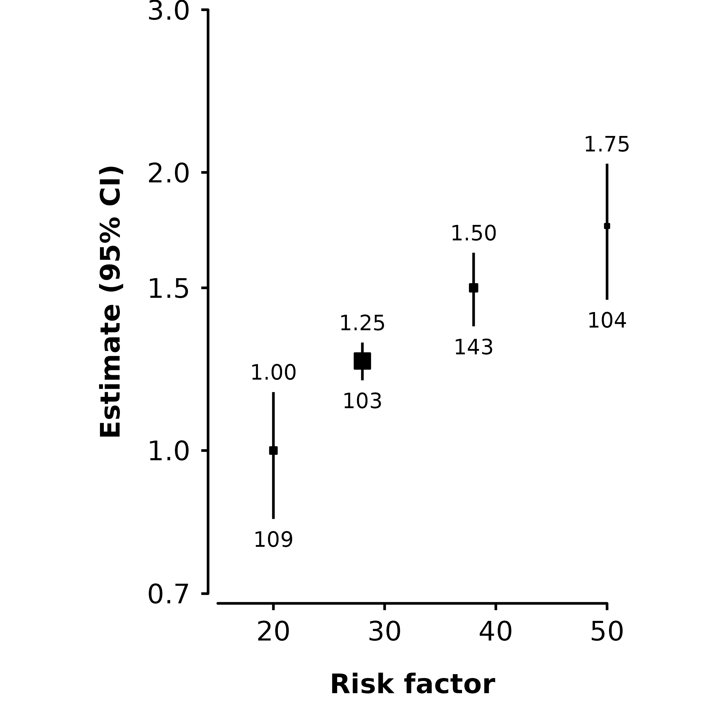
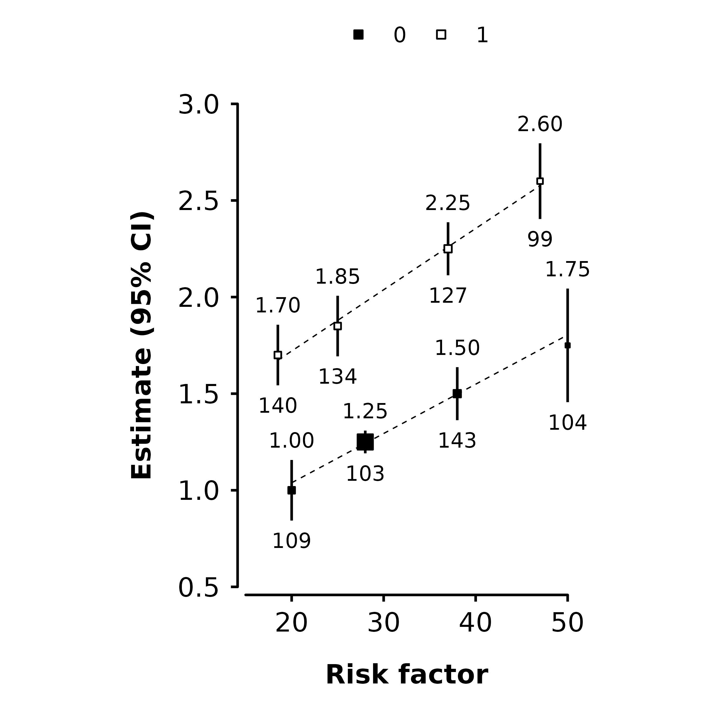

The make_shape_plot function creates a plot of estimates and CIs against risk factor levels using the ggplot2 package.
The function returns a named list containing:
- plot: the plot
- code: ggplot2 code to generate the plot
The function uses the plot_like_ckb function to modify the theme and control the look of the plot.
In RStudio, the ggplot2 code used to generate the plot will be shown in the ‘Viewer’ pane. This code can be copied and further edited to adapt the plot.
Simple example
Given a data frame of estimates and standard errors (to be plotted on the y axis), and risk factor levels (to be plotted on the x axis), a plot can be created.
plot <- make_shape_plot(results[results$is_female == 0,], col.x = "rf", col.estimate = "est", col.stderr = "se", col.n = "n", xlims = c(15, 50), ylims = c(0.5, 3), scalepoints = TRUE, title = NULL)

Log scale
Set the logscale argument to true to use a log scale on the vertical axis.
plot <- make_shape_plot(results[results$is_female == 0,], col.x = "rf", col.estimate = "est", col.stderr = "se", col.n = "n", xlims = c(15, 50), ylims = c(0.7, 3), ybreaks = c(0.7, 1, 1.5, 2, 3), scalepoints = TRUE, title = NULL, logscale = TRUE)
 If your estimates and standard errors are on the log scale (e.g. log hazard ratios), then set exponentiate to true. This will plot exp(estimates) and use a log scale for the axis (if logscale is not set).
Using groups
The col.group argument can be supplied to plot results for different groups (using shades of grey for the fill colour). (Set ciunder to TRUE so that the confidence interval lines are hidden behind behind the point estimate squares.)
plot <- make_shape_plot(results, col.x = "rf", col.estimate = "est", col.stderr = "se", col.n = "n", col.group = "is_female", xlims = c(15,50), ylims = c(0.5, 3), scalepoints = TRUE, title = NULL, ciunder = TRUE)
Adding lines
The lines argument will add lines (linear fit through estimates on plotted scale, weighted by inverse variance) for each group.
plot <- make_shape_plot(results, col.x = "rf", col.estimate = "est", col.stderr = "se", col.n = "n", col.group = "is_female", xlims = c(15,50), ylims = c(0.5, 3), scalepoints = TRUE, title = NULL, ciunder = TRUE, lines = TRUE)

Setting aesthetics
The shape and fill colour of points, and colour of points and confidence interval lines can be set overall or on a per-point basis. This is done by setting arguments shape, colour, cicolour, fill, and ciunder to appropriate values, or to the name of a column containing values for each point.
The argument/columns, what they control, and the type:
| argument | controls | type |
|---|---|---|
| shape | plotting character for points | integer |
| colour | colour of points | character |
| cicolour | colour of CI lines | character |
| fill | fill colour of points | character |
| ciunder | if the CI line should be plotted before the point | logical |
Using values
If the argument doesn’t match the anem of a column in the data, then the value will be used for all points.
plot <- make_shape_plot(results, col.x = "rf", col.estimate = "est", col.stderr = "se", col.n = "n", xlims = c(15,50), ylims = c(0.5, 3), scalepoints = TRUE, title = NULL, ciunder = TRUE, shape = 23, colour = "black", fill = "red", cicolour = "blue")

Using columns
If the argument matches a column name, then the values in the column will be used.
results$fillcol <- "black" results[results$is_female == 1,]$fillcol <- "orange" plot <- make_shape_plot(results, col.x = "rf", col.estimate = "est", col.stderr = "se", col.n = "n", xlims = c(15,50), ylims = c(0.5, 3), scalepoints = TRUE, title = NULL, ciunder = TRUE, colour = "fillcol", fill = "fillcol")

Specify a column for cicolour is useful for changing the colour of confidence interval lines that would otherwise be hidden.
results$cicol <- "black" results[2,]$cicol <- "white" plot <- make_shape_plot(results, col.x = "rf", col.estimate = "est", col.stderr = "se", col.n = "n", xlims = c(15,50), ylims = c(0.5, 3), scalepoints = TRUE, title = NULL, pointsize = 7, cicolour = "cicol")

Note that the size of boxes depends on pointsize, but the true length of confidence interval lines depends on the size at which the plot is displayed or saved. So, first save your plot as an image then go back to change the colour of confidence interval lines as needed.
Stroke
The stroke argument sets the stroke aesthetic for plotted shapes. See https://ggplot2.tidyverse.org/articles/ggplot2-specs.html for more details. The stroke size adds to total size of a shape, so unless stroke = 0 the scaling of size by inverse variance will be slightly inaccurate (but there are probably more important things to worry about).